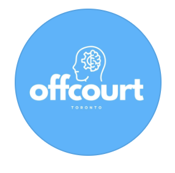

Canada · Crisis support
Call or text 9-8-8
Free, 24/7 suicide-crisis support. If you are in immediate danger, call 9-1-1.
Visit 9-8-8 ↗
Resources & get help
Offcourt is peer education and community—not therapy or emergency care. These trusted services can help when you need more support.
Canada · Crisis support
Free, 24/7 suicide-crisis support. If you are in immediate danger, call 9-1-1.
Visit 9-8-8 ↗Youth mental health
Evidence-based tools and guides, including youth resources for stress and anxiety.
Explore the toolkit ↗Toronto & beyond
Information and pathways to youth mental-health support and services.
View youth resources ↗Start a conversation
Words and ideas to help start a difficult conversation.
Conversation support ↗